开心果 Need Car · 2024-01-02T07:19:00+08:00 · 微信原文
搞MCAL开发的小伙伴，对EB Tresos的使用，应该不陌生。我们知道，每家芯片厂商不光是卖芯片，他们也会将对应芯片的MCAL开发好，配套对应型号的芯片。所以，一般来说，商用MCAL需要找芯片原厂或者指定的代理商购买。但是，对应MCAL的配置上位机，不一定原厂提供，比如本文要聊的EB Tresos软件，EB Tresos由Elektrobit(简称EB)开发的一款用于开发汽车ECU软件的工具。
本文，主要讨论基于EB Tresos的STM配置及使用。
1、EB tresos基础设置
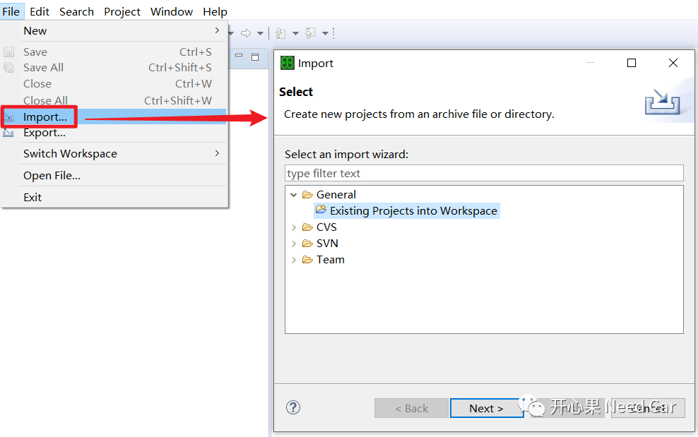
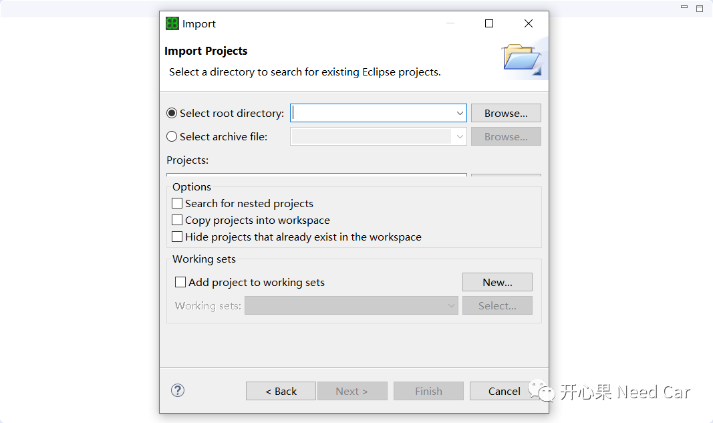
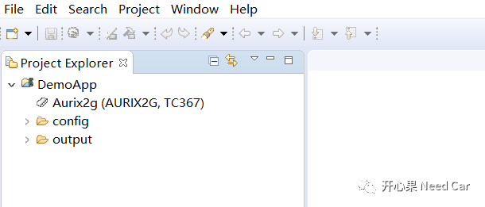
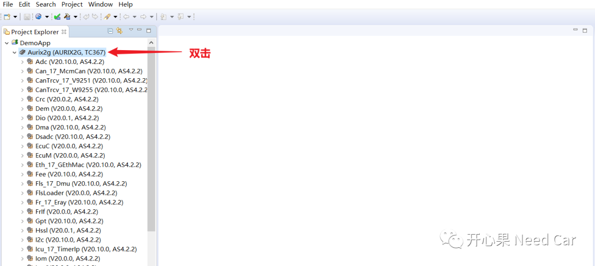
（二）Code输出路径
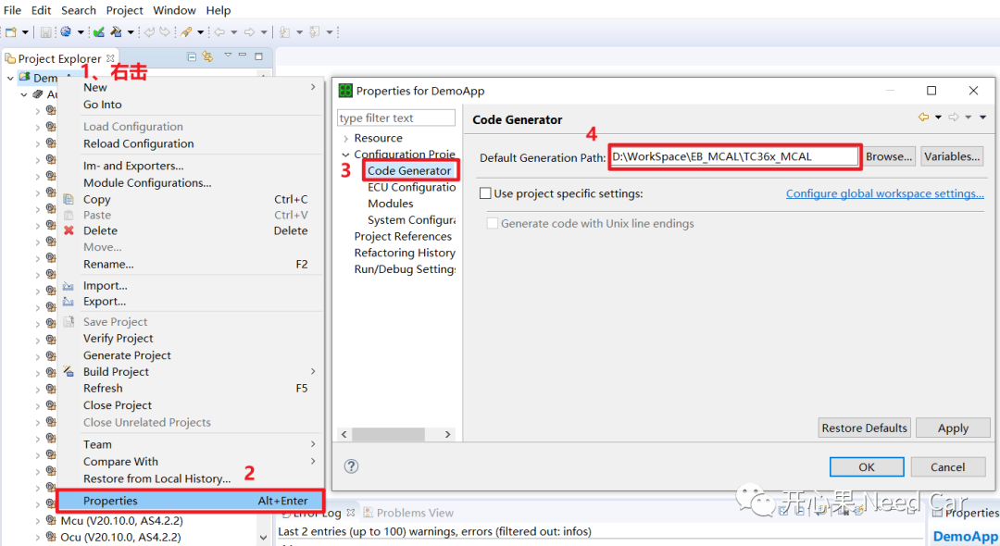
2、STM配置
MCU配置
由于需要5ms中断一次，因此，会使用到STM的比较寄存器，本文选择STM的CMP0，如下所示：
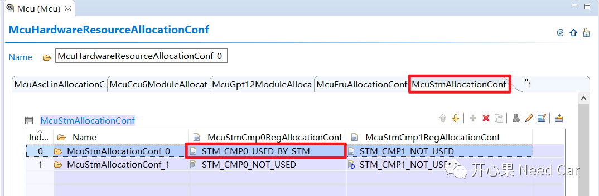
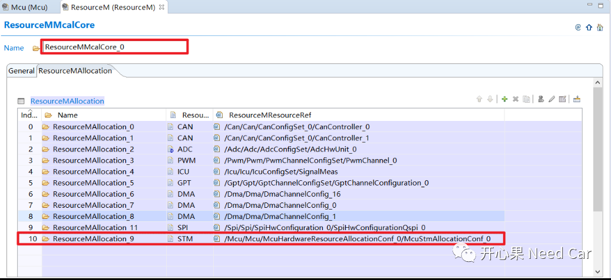
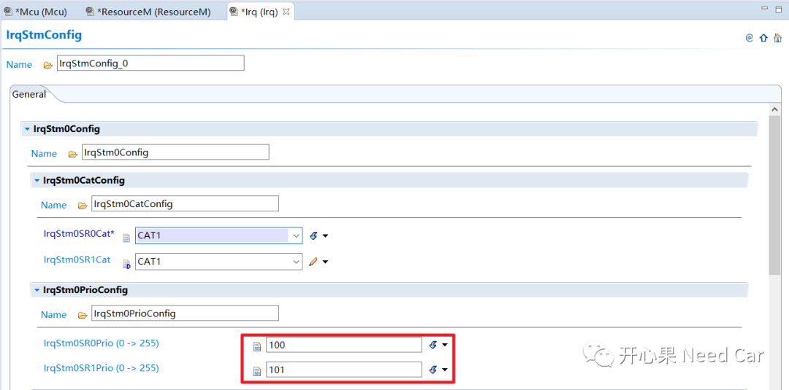
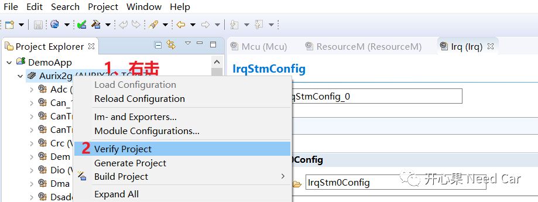
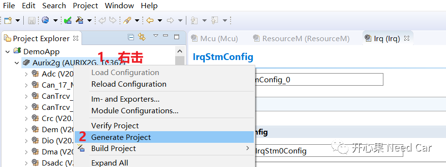
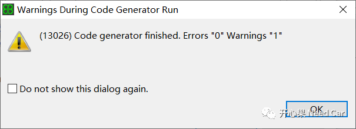
3、STM使用
（一）MCU初始化
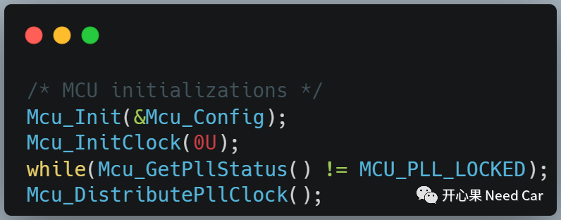
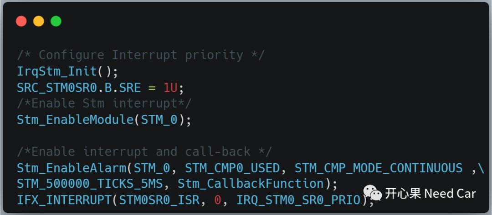
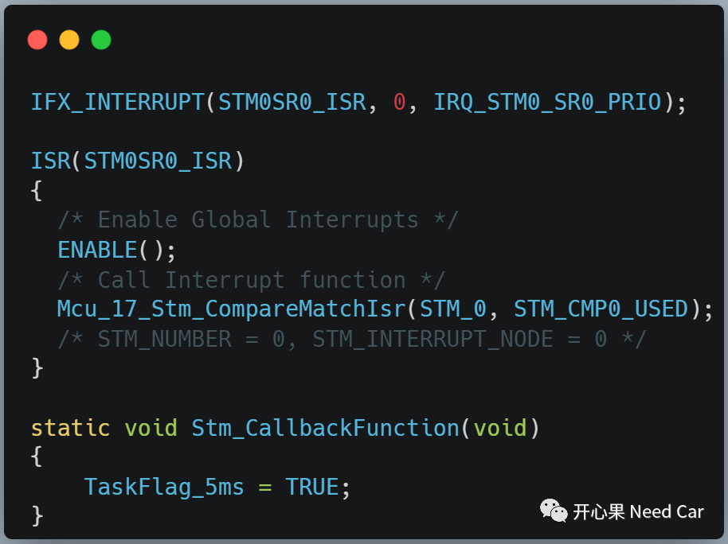
STM使用实例如下：
void core0_main (void){unsigned short cpuWdtPassword;unsigned short safetyWdtPassword;ENABLE();/** !!WATCHDOG0 AND SAFETY WATCHDOG ARE DISABLED HERE!!* Enable the watchdog in the demo if it is required and also service the watchdog periodically* */cpuWdtPassword = Ifx_Ssw_getCpuWatchdogPassword(&MODULE_SCU.WDTCPU[0]);safetyWdtPassword = Ifx_Ssw_getSafetyWatchdogPassword();Ifx_Ssw_disableCpuWatchdog(&MODULE_SCU.WDTCPU[0], cpuWdtPassword);Ifx_Ssw_disableSafetyWatchdog(safetyWdtPassword);/* MCU initializations */Mcu_Init(&Mcu_Config);Mcu_InitClock(0U);while(Mcu_GetPllStatus() != MCU_PLL_LOCKED);Mcu_DistributePllClock();/* Configure Interrupt priority */IrqStm_Init();SRC_STM0SR0.B.SRE = 1U;/*Enable Stm interrupt*/Stm_EnableModule(STM_0);/*Enable interrupt and call-back */Stm_EnableAlarm(STM_0, STM_CMP0_USED, STM_CMP_MODE_CONTINUOUS , STM_500000_TICKS_5MS, Stm_CallbackFunction);while (1){if (TRUE == TaskFlag_5ms){TaskFlag_5ms = FALSE;TaskCnt++;}}}
往期精彩回顾
工程思考：CAN Transceiver不工作，节点还会Busoff吗？
Boot开发：App诊断请求（$10 02/82）信息"传递"给Boot方式（三）